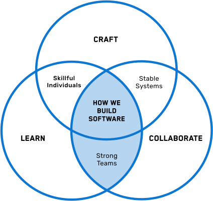

Strong Teams
Intersection of Learn + Collaborate
Revamping our developer onboarding to build strong connections
Read about Skillful Individuals →“Our goal was to make onboarding a tailored learning experience to get new Nulogite developers up to speed with our domain, agile practices, and development standards, consistently.”
Melissa & Chris
SOFTWARE DEVELOPER & SOFTWARE DEVELOPER LEAD NULOGITES SINCE 2017
Melissa:
I’ve been a developer for about 7 years now. Most of that time was spent working in South Africa. Nulogy is my first job in Canada.
From the start, I could tell that Nulogy was going to be very different than what I was used to. Part of my interview here involved pair programming. I’d never done that before. I’d never worked in an agile environment either. Previously I had always written code alone. I didn’t consider software development to be a collaborative activity. Now, having worked at Nulogy I’ll never go back to that style of working again. Nulogy changed the way I feel about building code as a team.
This was in large part due to the onboarding program I went through. I was partnered up with a buddy who was there to get me up to speed with our engineering practices like pair programming, test-driven development, and our software development lifecycle. But it was more than just going through these practices in a slidedeck. We had workshops, field trips, retros, and weekly check-ins with a lot of opportunity for my team members to give me explicit feedback on my onboarding.
Chris (featured at bottom):
It hasn’t always been like this. There used to be a time where our onboarding program at Nulogy was not very good. Developers would tell us that there wasn’t enough explicit support to get them up to speed on Nulogy’s domain, or engineering practices and the onboarding felt like sink-or-swim.
A handful of us decided to revamp the whole process from scratch.
Our goal was to make onboarding a tailored learning experience to get new Nulogite developers up to speed with our domain, agile practices, and development standards, consistently. We realized that developers have different learning styles and their own learning objectives. If a developer wanted to be better at Rails, we made sure that there are multiple resources for learning the same thing: readings, or more tactical practice exercises.
We built out information about organizational tools, an industry overview, a tour of our customer facilities, walking through organizational charts. We made sure the team was bonding by scheduling intro lunches, and teaching consensus building tools. We talked about engineering practices, and learning practices like having a growth mindset.
We did this through:
- A system of different resources including a coach, Buddy, on-boarding coordinator
- A regular onboarding retrospectives (sharing in success, improvement in practice, agility in everything, leadership)
What’s really exciting is that many developers have completed this new onboarding program. Our ramp-up time has moved from 6 months to about 1 month, and lots of developers like Melissa tell us that this is the best onboarding they have ever been to. It’s not just the new developers that are learning, we’re learning too and are constantly improving our onboarding program through feedback from developers who have been through it. I can’t wait to see what changes you bring to our onboarding program!